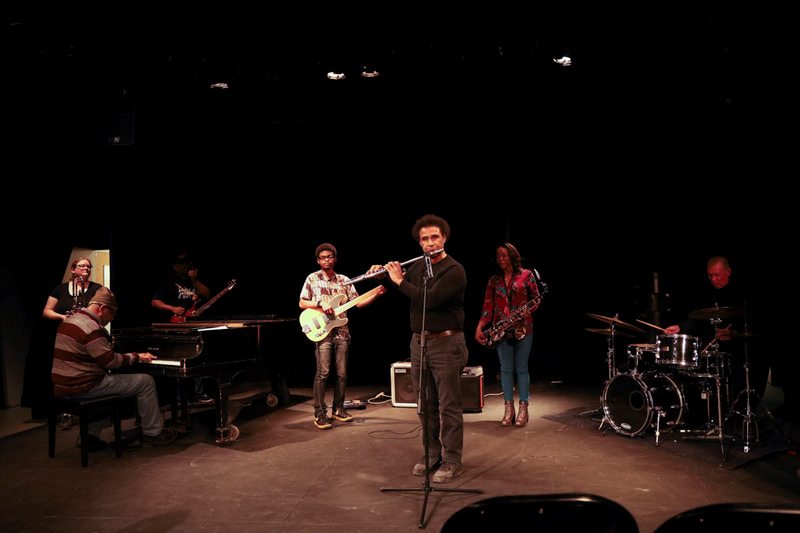

Recent Bylines

Jazz artists perform, share perspectives on the genre

Other Works
- "Eden, new farm-to-table restaurant, cooks food over wood fire"
- "With Love, Restaurant changes menu for a Somali taste"
- "Salt City Dance Festival showcases Syracuse's dance community"